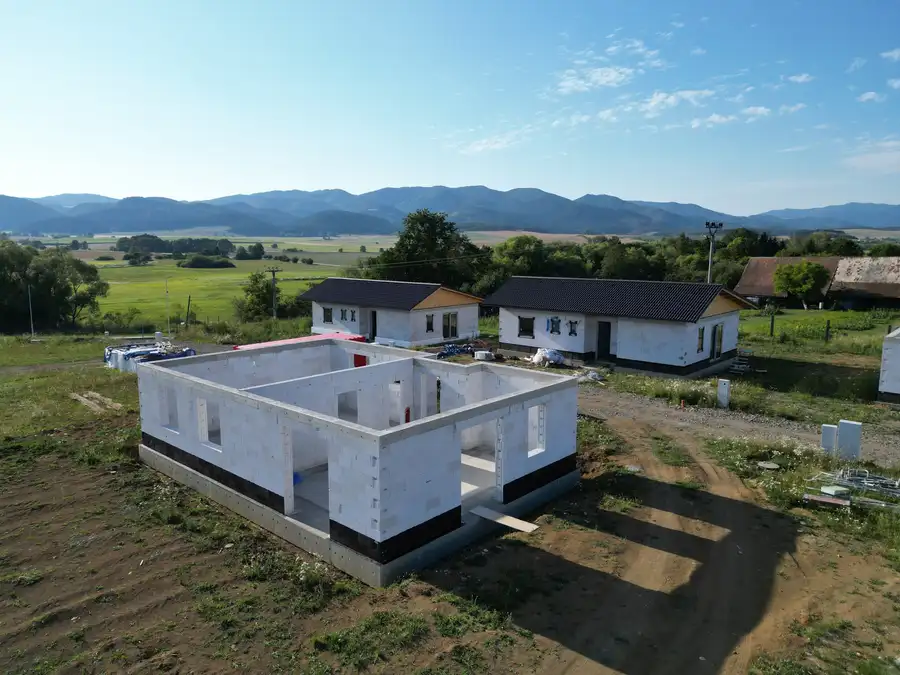
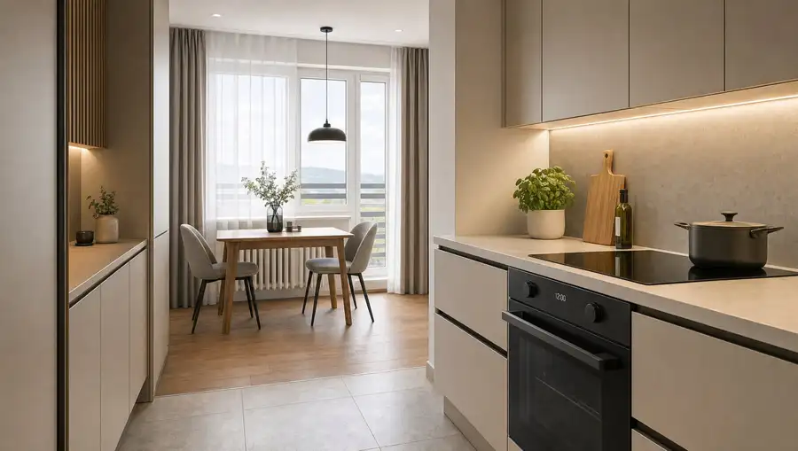
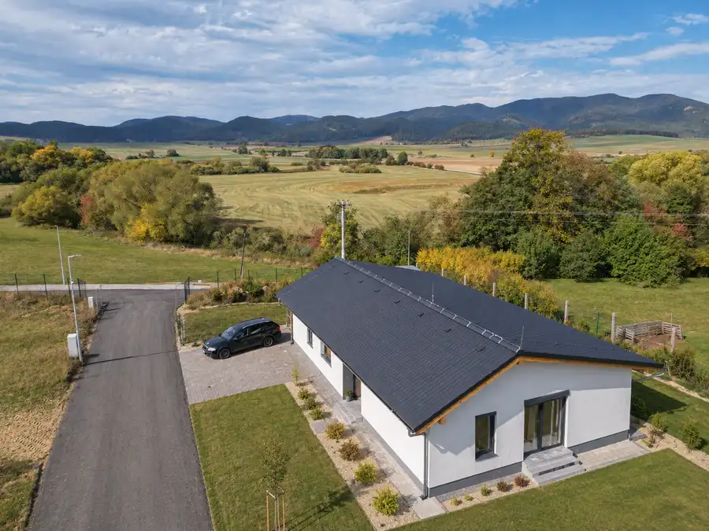

Priestranný 2 izbový byt po čiastočnej rekonštrukcii 65 m²
Martin
- Dispozícia2-izbový
- Plocha65 m²
- Poschodie5. z 8
- StavČiastočná rekonštrukcia
- VlastníctvoOsobné
O nehnuteľnosti
Ponúkame na predaj 2 izbový byt na ulici Hurbanova v meste Martin. Byt disponuje slnečným balkónom a loggiou s nádhernými výhľadmi na Martinské hole a Malú Fatru, kombinácia, ktorá je v tejto lokalite vzácna.Celková úžitková plocha bytu je 65 m2 + 3 m2 látková pivnica. Byt sa nachádza na 5. poschodí z 8 v bytovom dome s výťahom, v lokalite s kompletnou občianskou vybavenosťou v pešej dostupnosti. Bezproblémové parkovanie pred bytovým domom je samozrejmosťou. V prípade rýchleho jednania možná dohoda.Skvelý pomer výkon / cena! Byt vhodný aj ako investícia, nakoľku sú tu veľmi nízke mesačné náklady.Dispozícia a výhľady:Priestranná chodba, slnečná obývacia izba, spálňa s loggiou, otvorená kuchyňa s jedálňou a výstupom na balkón, kúpelňa s vaňou a samostatné WC. Z loggie sa otvára nádherný výhľad na západnú stranu smerom na Martinské hole a z balkóna na Malú Fatru a vrch Magury.Stav a potenciál:Byt je po čiastočnej rekonštrukcii (plastové okná, podlahy, stupačky, vzduchotechnika a bezpečnostné dvere), čo predstavuje ideálnu príležitosť dokončiť ho presne podľa vlastných predstáv. Rekonštrukciu si vyžiada najmä kuchyňa a kúpeľňa, ktorá bola zdemontovaná a vyprataná z bytu. Byt je pripravený na dotvorenie podľa vlastných predstáv za rozumný peniaz. Vďaka celkovej výmere 68 m² a premyslenej dispozícii má byt reálny potenciál stať sa moderným a komfortným bývaním za výbornú cenu. Možnosť prerobenia na 3 izbový byt pripadá do úvahy.Výhody nehnuteľnosti:• Slnečný balkón aj loggia, každý s pohľadom na iné pohorie - ojedinelá kombinácia• Nadštandardná výmera + skvelá cena na m2• Ideálne poschodie - 5. z 8, dostatok svetla a výhľadu bez prehrievania posledného poschodia• Nízke mesačné náklady cca 120 €, dlhodobo udržateľné bývanie• Priestor podľa vlastných predstáv• Praktické zázemie - vlastná pivnica a spoločná miestnosť na bicykle• Kompletná občianska vybavenosť v pešej dostupnosti - obchody, služby, školy, dopravaPre viac informácií alebo dohodnutie obhliadky ma neváhajte kontaktovať.Samuel Hvizd M.A.samuel.hvizd@targetreal.sk0951 005 630
Parametre
| Cellar area | 3 m² |
|---|---|
| Cena vrátane energií | Nie |
| Druh | 2 izbový byt |
| Dátum zverejnenia | 30. 9. 2026 |
| Energetický certifikát budovy | nie je |
| Energie | 120 |
| Orientácia | Severozápadná, Severovýchodná |
| Plocha balkónu v m2 | 3 m² |
| Plocha lodžie | 3 m² |
| Podlažie | 5 |
| Počet balkónov | 1 |
| Počet izieb / miestností | 2 |
| Počet lodžií | 1 |
| Počet nadzemných podlaží | 8 |
| Počet pivníc | 1 |
| Rok poslednej rekonštrukcie | 2020 |
| Rok výstavby | 1985 |
| Stav nehnuteľnosti | Čiastočná rekonštrukcia |
| Telekomunikácie | Internet, Káblová TV, Optická sieť |
| Typ | Predaj |
| Typ konštrukcie | Panelová |
| Umiestnenie | Ďalšie nadzemné podlažie |
| Vlastníctvo | Osobné |
| Vybavenie | Balkón, Lodžia, Pivnica, Verejné parkovanie, Výťah |
| Vykurovanie | Ústredné |
| Úžitková plocha | 65 m² |
Kde to je


Mohlo by Vás zaujímať

DomNové9 190 000 €Novostavba 4-izbového bungalovu s terasou, podlahové kúrenie | Ivančiná pri T. Tepliciach Ivančiná 102 m² Na predaj jeden z moderných 4-izbových rodinných domov (bungalov) s terasou v obci Ivančiná, len pár minút od Turčianskych Teplíc. Dom je už vo…
BytNové5 175 000 €2-izbový byt s balkónom a loggiou - rekonštrukcia podľa vlastných predstáv | Hurbanova, Martin Martin 2-izbový65 m²5. podlažie Ponúkame na predaj priestranný 2-izbový byt na Hurbanovej ulici v Martine s výmerou 65 m² + 3 m² pivnica. Byt sa nachádza na 5. poschodí z 8 v…
DomNové9 235 000 €Dom na kľúč | 4-izbový bungalov s terasou, 591 m² pozemok | Ivančiná, Turčianske Teplice Ivančiná 108 m² Ponúkame na predaj rodinný dom s terasou neďaleko mesta Turčianske Teplice, už vo výstavbe. Dom sa nachádza v obci Ivančiná, v pokojnej a zelenej…